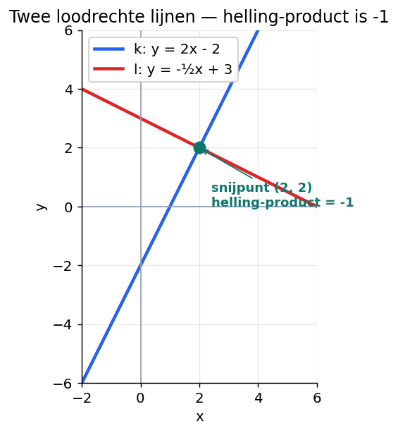
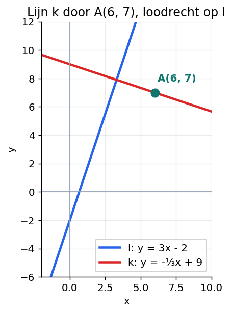
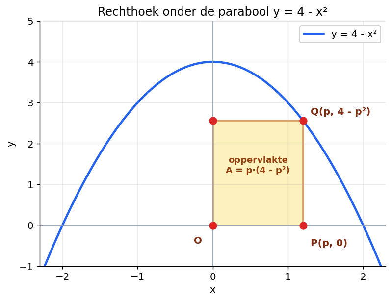
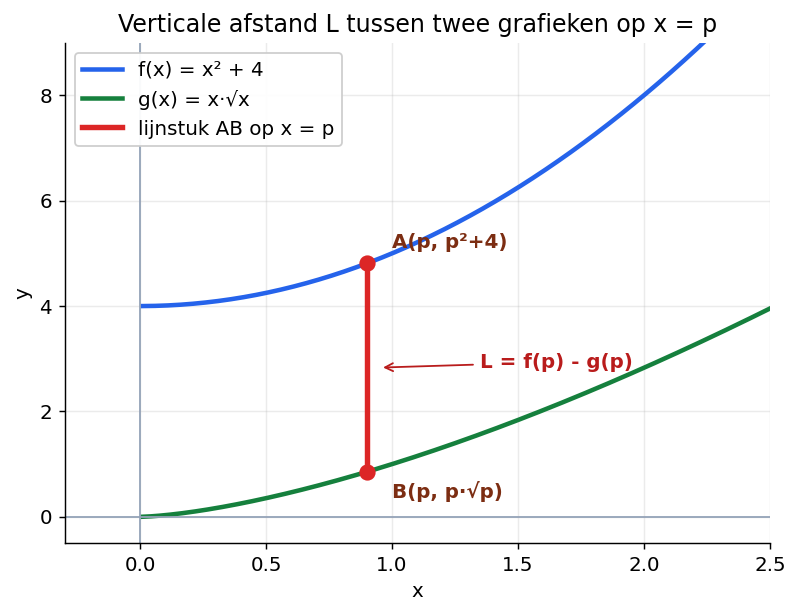
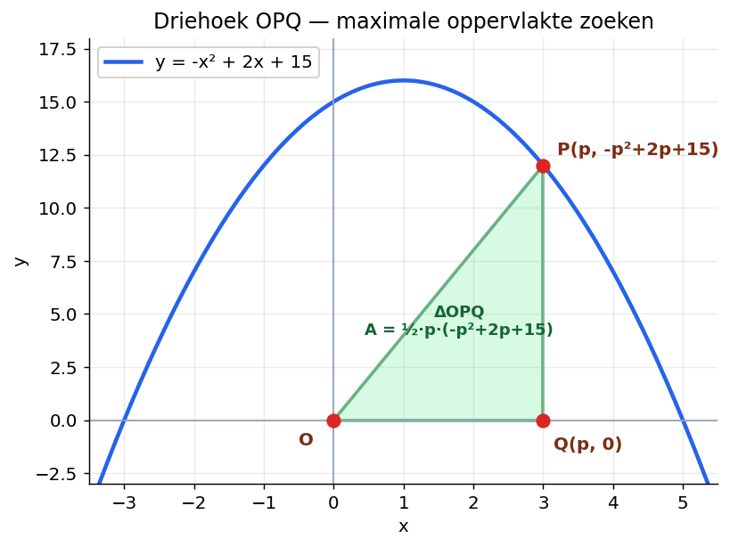

Loodrechte lijnen, optimaliseren van oppervlakte en afstand
Wat ga je leren?
Een lijn opstellen door een gegeven punt die loodrecht staat op een gegeven lijn
De vier notaties voor de afgeleide herkennen: f'(x), y', dy/dx, df(x)/dx
Optimaliseren: maximale oppervlakte vinden bij een grafiek
Optimaliseren: maximale verticale afstand tussen twee grafieken vinden
Weten wat je precies mag bij "Bereken", "Bereken met de afgeleide", "Bereken algebraïsch" en "Bereken exact"
Hoi Kasper — klaar om te beginnen?
Klik op de knop hieronder en je tutor begeleidt je stap voor stap door deze paragraaf. Werk in je eigen tempo. Een fout antwoord is geen probleem — daar leer je juist van.
1. Twee lijnen die loodrecht op elkaar staan — wat geldt er?
Je kent de helling van een rechte lijn al. Bij y = ax + b is a de helling.
Stel je hebt twee lijnen, k en l. Wanneer staan ze loodrecht op elkaar?

Figuur 1. Twee loodrechte lijnen: k: y = 2x − 2 en l: y = −½x + 3.
Kijk naar de hellingen. De helling van k is 2. De helling van l is −½.
Vermenigvuldig die twee hellingen met elkaar:
2 · (−½) = −1
Dat is geen toeval. Praat erover met je tutor.
2. Theorie A — Loodrechte lijnen
REGEL
Voor twee lijnen k en l met helling ongelijk aan 0 geldt:
helling van k · helling van l = −1 ⇔ k staat loodrecht op l
Dus als je de helling van de ene lijn weet, weet je ook de helling van elke lijn die loodrecht erop staat.
Voorbeelden van helling-paren waarbij het product −1 is:
helling 2 ↔ helling −½
helling 3 ↔ helling −⅓
helling ¼ ↔ helling −4
helling −5 ↔ helling ⅕
VOORBEELD
Lijn l heeft formule y = 4x − 1. Lijn k staat loodrecht op l en gaat door punt P(8, 3). Stel de formule van k op.
Stap 1. De helling van l is 4. Dus de helling van k is:
helling k = −1 / 4 = −¼
Stap 2. k heeft de vorm y = −¼x + b. Vul punt P(8, 3) in:
3 = −¼ · 8 + b
3 = −2 + b
b = 5
Antwoord:
k: y = −¼x + 5

Figuur 2. Een ander voorbeeld: k loodrecht op l: y = 3x − 2, door A(6, 7).
Probeer zelf — loodrechte lijn opstellen
Lijn l heeft formule y = ½x + 4. Lijn k staat loodrecht op l en gaat door punt P(1, 6). Stel de formule van k op.
Stappenplan
helling l = ½, dus helling k = −1 / (½) = −2
k: y = −2x + b. Door P(1, 6): 6 = −2 · 1 + b, dus b = 8
k: y = −2x + 8
3. Theorie B — Optimaliseren van oppervlakte
Bij dit soort opgaven krijg je een grafiek. Onder of bij die grafiek ligt een rechthoek of een driehoek. Eén hoekpunt ligt op de grafiek en hangt af van een variabele p.
De vraag: voor welke p is de oppervlakte zo groot mogelijk?

Figuur 3. Een rechthoek onder de parabool y = 4 − x². De oppervlakte hangt af van p.
Werkschema: optimaliseren in 5 stappen
Schrijf de oppervlakte-formule op in p: A(p) = ...
Bereken de afgeleide dA/dp.
Los op dA/dp = 0.
Controleer of de gevonden p een maximum geeft (kijk naar de grafiek of redeneer).
Bereken de maximale oppervlakte A(p).
Checklist vóór je gaat rekenen
Wat zie ik? Welke grafiek? Welke vorm (rechthoek, driehoek)?
Wat moet ik berekenen? Maximale oppervlakte? Of bij welke p?
Welke formule moet ik opstellen? A(p) als functie van p — alleen p, geen x of y meer.
VOORBEELD
Onder de parabool y = 9 − x² ligt een rechthoek met hoekpunten O(0, 0), P(p, 0), Q(p, 9 − p²) en R(0, 9 − p²), met 0 < p < 3. Bereken voor welke p de oppervlakte van de rechthoek maximaal is.
Stap 1. Stel de oppervlakte-formule op. De breedte is p, de hoogte is 9 − p²:
A(p) = p · (9 − p²) = 9p − p³
Stap 2. Bereken de afgeleide:
dA/dp = 9 − 3p²
Stap 3. Los op dA/dp = 0:
9 − 3p² = 0
p² = 3
p = √3 (alleen positieve oplossing, want p > 0)
Stap 4. Bij p = 0 en p = 3 is de rechthoek plat. Daartussen moet wel een maximum liggen. Dus p = √3 geeft een maximum.
Stap 5. Bereken A(√3):
A(√3) = √3 · (9 − 3) = 6√3
Antwoord: bij p = √3 is de oppervlakte maximaal, namelijk 6√3.
Probeer zelf — rechthoek onder y = 4 − x²
Bekijk figuur 3. Onder de parabool y = 4 − x² ligt de rechthoek met hoekpunten O(0, 0), P(p, 0), Q(p, 4 − p²) en R(0, 4 − p²), met 0 < p < 2. Voor welke p is de oppervlakte maximaal?
Stappenplan
A(p) = p · (4 − p²) = 4p − p³
dA/dp = 4 − 3p²
4 − 3p² = 0 geeft 3p² = 4, dus p² = 4/3
p = √(4/3) = 2/√3 ≈ 1,15 (alleen positief, want p > 0)
Tussen p = 0 en p = 2 hoort één maximum, dus dit is het maximum.
4. Theorie C — Verticale afstand tussen twee grafieken
Soms heb je twee grafieken: f en g. Op een verticale lijn x = p ligt een punt op f en een punt op g. De afstand daartussen is een lijnstuk.
Als f boven g ligt op die x-waarde, dan is de lengte:
L(p) = f(p) − g(p)
De vraag: voor welke p is L maximaal (of minimaal)?

Figuur 4. De verticale afstand L tussen de grafieken van f en g.
Werkschema: maximale/minimale afstand
Schrijf L(p) op: L(p) = f(p) − g(p) (de bovenste min de onderste).
Bereken de afgeleide dL/dp.
Los op dL/dp = 0.
Controleer of het een maximum of minimum is.
Bereken L(p) voor die p.
VOORBEELD
Gegeven zijn f(x) = 6x − x² en g(x) = x. Op de verticale lijn x = p (met 0 < p < 5) ligt A op f en B op g. Bereken voor welke p de lengte van het lijnstuk AB maximaal is.
Stap 1. f ligt boven g op dit gebied. Schrijf L op:
L(p) = (6p − p²) − p = 5p − p²
Stap 2. Bereken de afgeleide:
dL/dp = 5 − 2p
Stap 3. Los op dL/dp = 0:
5 − 2p = 0
p = 2½
Stap 4. L is een bergparabool (de leidende term is −p²), dus dit is een maximum.
Stap 5. Bereken L(2½):
L(2½) = 5 · 2½ − (2½)² = 12½ − 6¼ = 6¼
Antwoord: bij p = 2½ is L maximaal, namelijk 6¼.
Probeer zelf — verticale afstand
Gegeven zijn f(x) = −x² + 8x en g(x) = 2x. Op de lijn x = p (met 0 < p < 6) ligt A op f en B op g. Bereken voor welke p de lengte van AB maximaal is.
Stappenplan
L(p) = f(p) − g(p) = (−p² + 8p) − 2p = −p² + 6p
dL/dp = −2p + 6
−2p + 6 = 0 geeft p = 3
L(3) = −9 + 18 = 9
5. Vraagstellingen en notaties — verplichte stof
Dit komt op je toets. Niet als losse vraag, maar als regel waar je je aan moet houden.
De vier vraagstellingen
Vraagstelling
Wat mag en moet
Bereken
Vrij in werkwijze. Grafische rekenmachine mag. Toelichting vereist. Antwoord in het aantal decimalen dat de vraag noemt.
Bereken met de afgeleide
De formule van de afgeleide moet zichtbaar zijn. De vergelijking f'(x) = 0 mag je grafisch-numeriek oplossen met de GR.
Bereken algebraïsch
Stap voor stap met de hand. Geen GR-grafiek en geen GR-solver. Decimalen mogen aan het einde.
Bereken exact
Algebraïsch én zonder afronden. Het eindantwoord bevat breuken of wortels — geen decimalen.
EZELSBRUGGETJE
"Exact" = breuken en wortels in het antwoord. "Algebraïsch" = met de hand, eindantwoord mag decimaal.
De notaties voor de afgeleide
De afgeleide van f mag je op verschillende manieren noteren. Ze betekenen allemaal hetzelfde:
f'(x)
y'
dy/dx
df(x)/dx
d/dx · f(x)
Op de toets kan elke notatie staan. Schrik er niet van. Het is steeds gewoon "de afgeleide".
LET OP
Bij optimaliseringsopgaven met variabele p schrijf je vaak dA/dp of dL/dp. De letter p is dan de variabele waarnaar je differentieert.
6. Toetsstijl-oefeningen
Op de toets krijg je opgaven met meerdere deelvragen die op elkaar bouwen. Hier oefen je dat — een opgave is pas af als alle deelvragen kloppen.
Opgave A — loodrechte lijn opstellen (uit het boek, Opg. 57)
Gegeven is de lijn l: y = 3x − 2. Stel de formule op van de lijn k die door A(6, 7) gaat en loodrecht op l staat.
Stappenplan
helling l = 3, dus helling k = −1/3
k: y = −⅓x + b. Door A(6, 7): 7 = −⅓ · 6 + b = −2 + b, dus b = 9
k: y = −⅓x + 9
Opgave B — driehoek met maximale oppervlakte (uit boek, C10)
Gegeven is de functie y = −x² + 2x + 15. Op de grafiek ligt het punt P(p, yP), en op de x-as ligt het punt Q(p, 0). Hierbij is 0 < p < 5.
Bereken voor welke p de oppervlakte van driehoek ΔOPQ maximaal is.

Figuur 5. Driehoek ΔOPQ — oppervlakte hangt af van p.
Stappenplan
OQ = p, QP = yP = −p² + 2p + 15
A(p) = ½ · OQ · QP = ½ · p · (−p² + 2p + 15) = −½p³ + p² + 7½p
dA/dp = −1½p² + 2p + 7½
Los op −1½p² + 2p + 7½ = 0. Vermenigvuldig beide kanten met −2: 3p² − 4p − 15 = 0